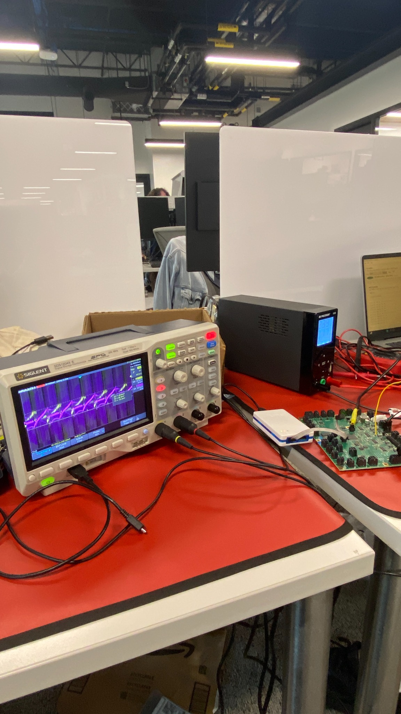
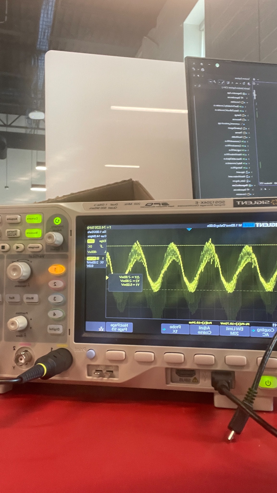
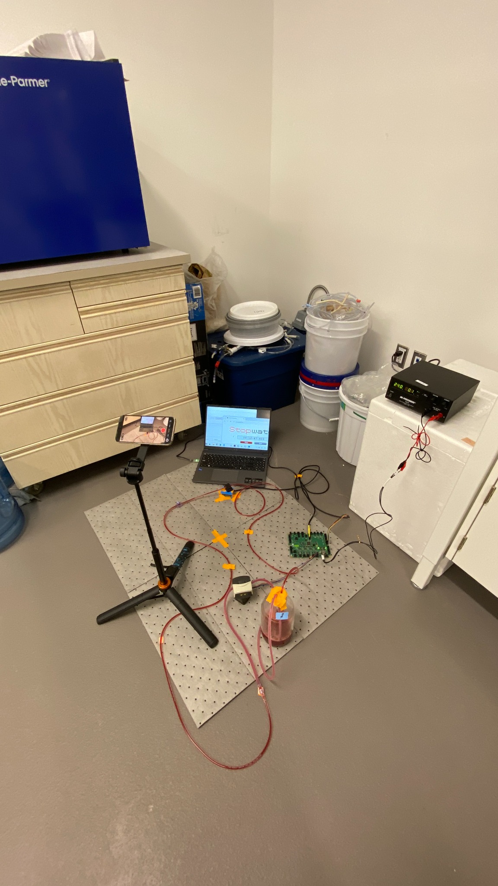
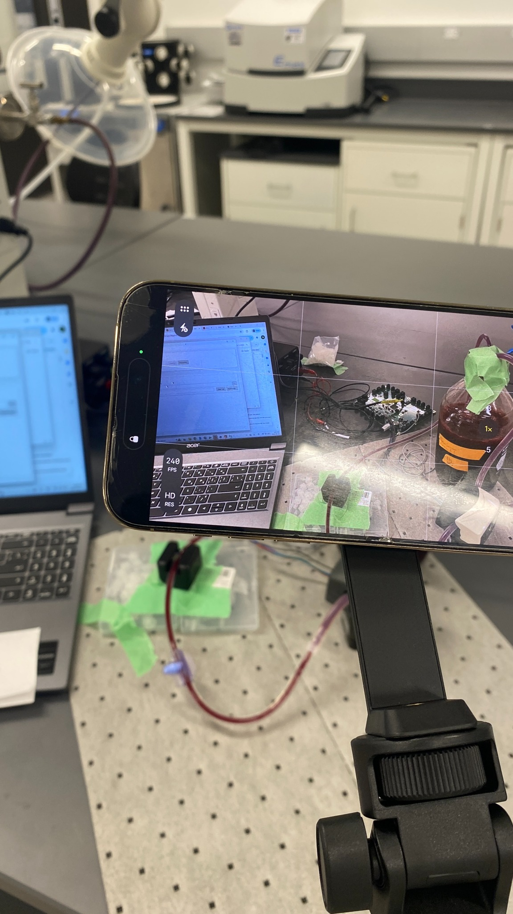
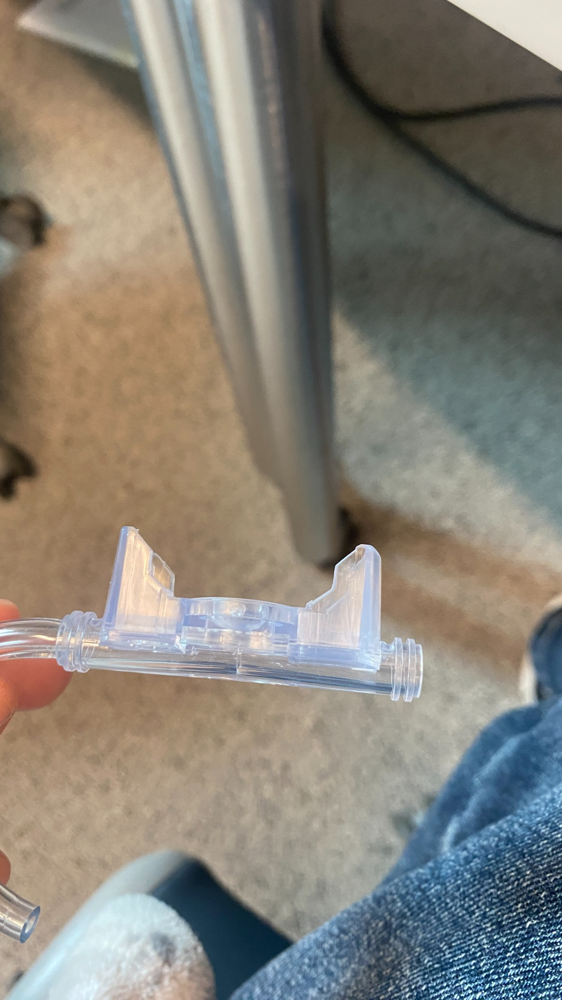

Qidni Labs
Qidni Labs develops medical-device systems that combine fluid handling, embedded electronics, sensors, and control software.
Embedded Firmware & Hardware Debugging
DRV8711 Motor-Driver Diagnostics
Extended ATSAMD51 firmware and an internal C# engineering diagnostics tool to inspect and configure DRV8711 registers and tuning parameters across four pump channels.
DRV81004-Q1 Valve-Control Firmware
Refactored firmware for two valve drivers with PCB-specific mappings and added structured SPI diagnostics for driver fault states.
Motor Stall-Detection Investigation
Compared internal vs. external stall-detection approaches using datasheets, board constraints, and oscilloscope measurements.
Motor-driver engineering diagnostics path
Motor-driver diagnostics architecture.
Motor-driver diagnostics
- Validated register read/write paths and decoded STATUS faults.
- Supported raw↔human-readable tuning values and limits.
- Redesigned UART responses so the MCU returned compact values while the host handled conversion/display.
Valve-driver firmware
- Moved HIT/HOLD behavior into per-driver configuration for two different PCB mappings.
- Added next-frame SPI diagnostic decoding for undervoltage, transfer, load, operating-mode, and channel faults.
Stall-detection finding
The existing PCB did not route the DRV8711 BEMF signal to an ADC-capable MCU input. External BEMF-based detection therefore required a hardware change rather than additional firmware alone.


Embedded Linux Platform
Configured and deployed an i.MX8M Plus-based SoM from bootloader setup through peripheral bring-up, networking, secure remote access, and automatic application startup.
Embedded Linux bring-up and provisioning flow
Embedded Linux bring-up and provisioning flow.
Board bring-up
- Configured U-Boot settings, base device trees, custom overlays, target binaries, and configuration.
- Created systemd services and validated automatic application startup.
- Worked with UART, SPI, I²C, HDMI, and other board-level interfaces.
Networking & remote access
- Stabilized direct Ethernet using DHCP with IPv4 link-local fallback and mDNS.
- Configured certificate-authority SSH authentication.
- Fixed time-related certificate failures using RTC synchronization at boot.
Provisioning automation
Built a Python Windows utility to automate connectivity checks, hostname/configuration setup, file deployment, device-tree overlays, scripts, services, and password/certificate SSH workflows.
Sensor Validation & Physical Integration
Air-bubble detector integration
- Ported existing sensor logic to ATSAMD51 platform GPIO APIs.
- Integrated raw, bubble-detection, and self-test behavior into the firmware build.
Controlled validation
- Used controlled tubing, injected bubbles, multiple flow conditions, video timing, and structured workbooks.
- Separated sensor response from physical bubble travel when interpreting detection timing.
Additional integration
- Developed formal net-fluid-removal verification procedures with acceptance checks.
- Investigated fluid-channel leakage across sealing, fit, restriction, strength, and manufacturing tradeoffs.



Pressure-sensor membrane integration
Designed and 3D-printed a simple alignment fixture using basic CAD to consistently position the custom membrane against a pressure sensor during integration and testing.